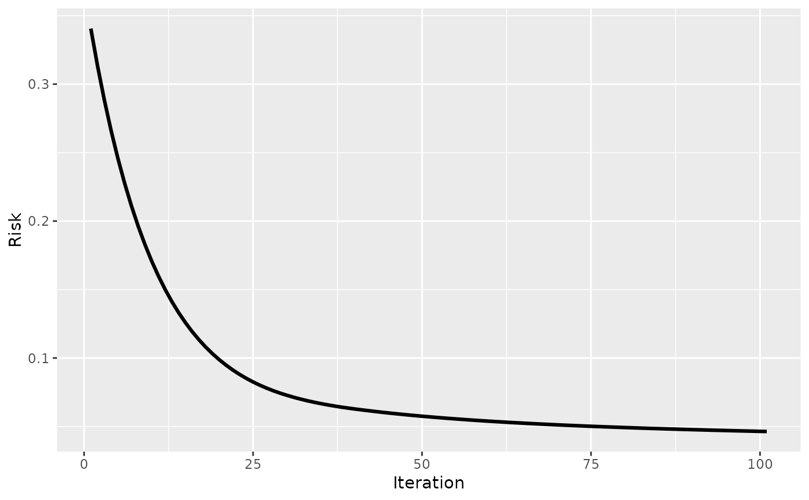
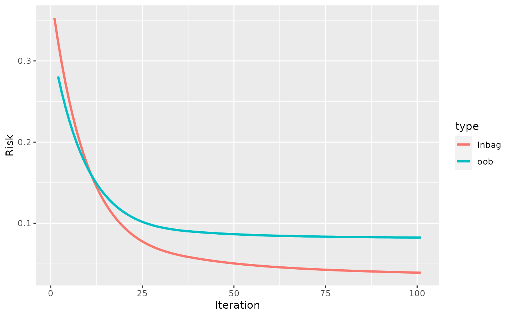

Visualize the risk
plotRisk.RdThis function visualizes the risk during training. If validation data are given, then the train risk is plotted against the validation risk.
Examples
cboost_no_valdat = boostSplines(data = iris, target = "Sepal.Length",
loss = LossQuadratic$new())
#> 1/100 risk = 0.31 time = 0
#> 2/100 risk = 0.29 time = 89
#> 4/100 risk = 0.25 time = 236
#> 6/100 risk = 0.21 time = 362
#> 8/100 risk = 0.18 time = 488
#> 10/100 risk = 0.16 time = 611
#> 12/100 risk = 0.14 time = 732
#> 14/100 risk = 0.13 time = 874
#> 16/100 risk = 0.11 time = 998
#> 18/100 risk = 0.1 time = 1123
#> 20/100 risk = 0.095 time = 1247
#> 22/100 risk = 0.088 time = 1400
#> 24/100 risk = 0.083 time = 1523
#> 26/100 risk = 0.078 time = 1642
#> 28/100 risk = 0.074 time = 1761
#> 30/100 risk = 0.071 time = 1884
#> 32/100 risk = 0.069 time = 2006
#> 34/100 risk = 0.067 time = 2135
#> 36/100 risk = 0.065 time = 2247
#> 38/100 risk = 0.063 time = 2393
#> 40/100 risk = 0.062 time = 2531
#> 42/100 risk = 0.061 time = 2655
#> 44/100 risk = 0.06 time = 2768
#> 46/100 risk = 0.059 time = 2883
#> 48/100 risk = 0.058 time = 3021
#> 50/100 risk = 0.057 time = 3148
#> 52/100 risk = 0.056 time = 3274
#> 54/100 risk = 0.056 time = 3400
#> 56/100 risk = 0.055 time = 3533
#> 58/100 risk = 0.054 time = 3653
#> 60/100 risk = 0.054 time = 3769
#> 62/100 risk = 0.053 time = 3886
#> 64/100 risk = 0.052 time = 4003
#> 66/100 risk = 0.052 time = 4119
#> 68/100 risk = 0.051 time = 4234
#> 70/100 risk = 0.051 time = 4347
#> 72/100 risk = 0.051 time = 4463
#> 74/100 risk = 0.05 time = 4578
#> 76/100 risk = 0.05 time = 4702
#> 78/100 risk = 0.049 time = 4836
#> 80/100 risk = 0.049 time = 4994
#> 82/100 risk = 0.049 time = 5152
#> 84/100 risk = 0.048 time = 5291
#> 86/100 risk = 0.048 time = 5421
#> 88/100 risk = 0.048 time = 5549
#> 90/100 risk = 0.048 time = 5679
#> 92/100 risk = 0.047 time = 5805
#> 94/100 risk = 0.047 time = 5933
#> 96/100 risk = 0.047 time = 6062
#> 98/100 risk = 0.047 time = 6201
#> 100/100 risk = 0.046 time = 6349
#>
#>
#> Train 100 iterations in 0 Seconds.
#> Final risk based on the train set: 0.046
#>
plotRisk(cboost_no_valdat)

cboost_valdat = boostSplines(data = iris, target = "Sepal.Length",
loss = LossQuadratic$new(), oob_fraction = 0.3)
#> 1/100 risk = 0.32 oob_risk = 0.28 time = 0
#> 2/100 risk = 0.3 oob_risk = 0.26 time = 81
#> 4/100 risk = 0.25 oob_risk = 0.23 time = 185
#> 6/100 risk = 0.21 oob_risk = 0.2 time = 278
#> 8/100 risk = 0.18 oob_risk = 0.18 time = 367
#> 10/100 risk = 0.16 oob_risk = 0.16 time = 459
#> 12/100 risk = 0.14 oob_risk = 0.15 time = 547
#> 14/100 risk = 0.12 oob_risk = 0.13 time = 635
#> 16/100 risk = 0.11 oob_risk = 0.12 time = 722
#> 18/100 risk = 0.1 oob_risk = 0.12 time = 810
#> 20/100 risk = 0.091 oob_risk = 0.11 time = 900
#> 22/100 risk = 0.084 oob_risk = 0.11 time = 988
#> 24/100 risk = 0.078 oob_risk = 0.1 time = 1085
#> 26/100 risk = 0.073 oob_risk = 0.099 time = 1173
#> 28/100 risk = 0.069 oob_risk = 0.096 time = 1267
#> 30/100 risk = 0.066 oob_risk = 0.094 time = 1377
#> 32/100 risk = 0.063 oob_risk = 0.093 time = 1466
#> 34/100 risk = 0.061 oob_risk = 0.091 time = 1556
#> 36/100 risk = 0.059 oob_risk = 0.09 time = 1661
#> 38/100 risk = 0.057 oob_risk = 0.09 time = 1799
#> 40/100 risk = 0.056 oob_risk = 0.089 time = 1895
#> 42/100 risk = 0.055 oob_risk = 0.088 time = 1986
#> 44/100 risk = 0.053 oob_risk = 0.088 time = 2076
#> 46/100 risk = 0.052 oob_risk = 0.087 time = 2181
#> 48/100 risk = 0.051 oob_risk = 0.087 time = 2272
#> 50/100 risk = 0.05 oob_risk = 0.086 time = 2364
#> 52/100 risk = 0.049 oob_risk = 0.086 time = 2452
#> 54/100 risk = 0.048 oob_risk = 0.086 time = 2546
#> 56/100 risk = 0.048 oob_risk = 0.085 time = 2637
#> 58/100 risk = 0.047 oob_risk = 0.085 time = 2729
#> 60/100 risk = 0.046 oob_risk = 0.085 time = 2820
#> 62/100 risk = 0.046 oob_risk = 0.085 time = 2911
#> 64/100 risk = 0.045 oob_risk = 0.084 time = 3001
#> 66/100 risk = 0.045 oob_risk = 0.084 time = 3095
#> 68/100 risk = 0.044 oob_risk = 0.084 time = 3192
#> 70/100 risk = 0.044 oob_risk = 0.084 time = 3283
#> 72/100 risk = 0.043 oob_risk = 0.084 time = 3373
#> 74/100 risk = 0.043 oob_risk = 0.084 time = 3466
#> 76/100 risk = 0.042 oob_risk = 0.083 time = 3556
#> 78/100 risk = 0.042 oob_risk = 0.083 time = 3675
#> 80/100 risk = 0.042 oob_risk = 0.083 time = 3766
#> 82/100 risk = 0.041 oob_risk = 0.083 time = 3859
#> 84/100 risk = 0.041 oob_risk = 0.083 time = 3981
#> 86/100 risk = 0.041 oob_risk = 0.083 time = 4081
#> 88/100 risk = 0.041 oob_risk = 0.083 time = 4181
#> 90/100 risk = 0.04 oob_risk = 0.083 time = 4282
#> 92/100 risk = 0.04 oob_risk = 0.083 time = 4387
#> 94/100 risk = 0.04 oob_risk = 0.083 time = 4495
#> 96/100 risk = 0.04 oob_risk = 0.083 time = 4608
#> 98/100 risk = 0.039 oob_risk = 0.082 time = 4711
#> 100/100 risk = 0.039 oob_risk = 0.082 time = 4812
#>
#>
#> Train 100 iterations in 0 Seconds.
#> Final risk based on the train set: 0.039
#>
plotRisk(cboost_valdat)
